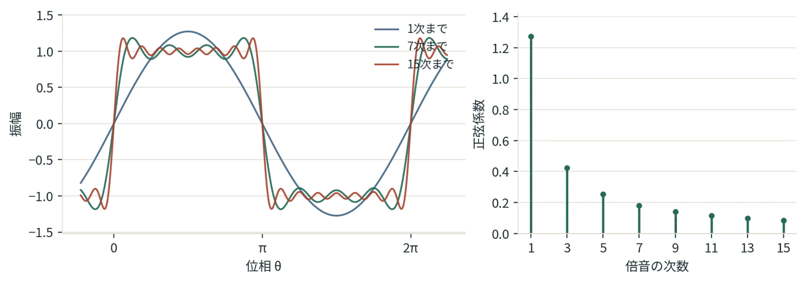

第26章 周波数比・調律・フーリエ級数
周波数比・セント・平均律、そしてフーリエ級数の入口。
この章で学ぶこと
- 周波数比をセント（対数）に直して足し算する
- 純正律と平均律のずれを、数値で比べる
- 矩形波が奇数次倍音の和であることを確かめる
倍率を足し算で表す
220→330 Hz と 440→660 Hz の差は 110 Hz と 220 Hz だが、周波数比はいずれも 。積になる連続した周波数比を足し算で記録したいので、比 に対し セントとする。 で、オクターヴ は1200セント。
定理 26.1（連続な加法的音程尺度）。 が連続で と を満たせば、。
証明を読む（読まなくても先へ進めます）
とおけば 。、。整数 では 、正整数 に対し だから有理数では 。任意の へ収束する有理数列と連続性を使えば 。 を代入する。∎
定理 26.2（12平均律の一意性）。 1オクターヴの上昇を正の同一周波数比 の12回の積で得るとき、 が唯一の解。MIDIノート番号 （A4 を69とする）には Hz が対応する。
証明を読む（読まなくても先へ進めます）
。正の実数上で は狭義単調増加で、 は式を満たす。A4からの 回の乗算、負の回数なら逆数の乗算により後半が従う。∎
| 音程 | 純正比の例 | 純正比をセントで表す | 12平均律 |
|---|---|---|---|
| オクターヴ | 1200.00 | 1200 | |
| 完全五度 | 701.96 | 700 | |
| 完全四度 | 498.04 | 500 | |
| 長三度 | 386.31 | 400 | |
| 短三度 | 315.64 | 300 |
五度を12回積み7オクターヴ下げると 、約23.46セントのピタゴラス・コンマが残る。一般に なら になり素因数分解の一意性に反する。したがって純正な五度を何回重ねても整数オクターヴには一致しない。ピタゴラス律の長三度 と純正長三度 の商は （シントニック・コンマ、約21.51セント）。中全音律の一種である四分の一コンマ中全音律では、各五度からこのコンマの1/4を引くと、四つの五度から二オクターヴを引いた長三度が純正になる。循環する全調で同等の条件を得たいときの解の一つが12平均律である。
やってみよう
実験。 A4 と、その上の長三度を 550 Hz（純正）または約554.365 Hz（平均律）で鳴らす。正弦波だけの比較と、整数倍の部分音を加えた比較を行う。純正では下音の第5部分音 と上音の第4部分音 がともに2200 Hz。平均律では約17.46 Hzずれ、これらの部分音の振幅が十分なら差が聴き取りやすくなる。
周期波を直交基底で分析する
周期 の信号の基本周波数を とし、、 とおく。 であり、負の は複素平面内で逆向きに回転する。
定理 26.3（直交性と係数の一意性）。 内積 に関し 。よって有限和 の係数は で一意に定まる。
証明を読む（読まなくても先へ進めます）
被積分関数は 。 では1。 では積分を指数関数で評価すると分子が 。係数式は の有限和と の内積をとれば、直交性により一項だけ残る。∎
この直交性の証明自体は有限和の係数を確定する。無限和を点ごとに再構成するには収束条件が必要である。たとえば周期信号が区分的に なら通常の対称部分和は各点の左右極限の平均へ収束する（証明は付録A）。信号が実数値なら 。これらの対を組み合わせると、振幅と位相をもつ実数の正弦波・余弦波になる。
矩形波の係数を積分する
角変数 で ()、 () の 周期波形を考える。奇関数なので DC と余弦係数はゼロ。実正弦係数は
従って奇数番だけが 、偶数番はゼロ。理想矩形波は奇数次倍音の無限和であり、有限和は近似になる。段差点の極限値は0。段差近傍には高調波を増やしても高さが消えずに領域の幅が縮む Gibbs 現象がある。実験室で 1・3・7・15次まで増やし、角の近くと音色の差を比較する。初期位相を変えると波形が変わる例も作れる。 Puckette S10

ここだけ押さえる
- 1オクターヴ＝1200セント。12平均律の五度は700セント、純正は約702セント。
- 純正な五度をいくつ重ねても、オクターヴには戻らない（ピタゴラス・コンマ）。
- 周期的な音は、正弦波の和に分解できる。